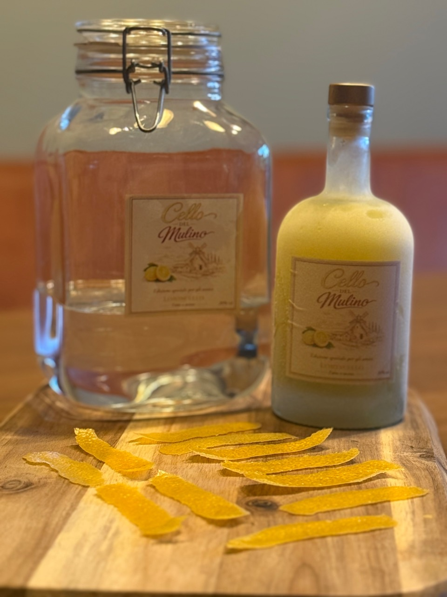

Ambacht
Vakmanschap in iedere fles.
Casa del Mulino wordt gemaakt zoals ambacht bedoeld is. Geen geautomatiseerde productielijn, maar aandacht voor iedere stap van het proces.

Van het selecteren van het fruit en het schillen van de citroenen tot het filteren, bottelen en etiketteren: iedere fles wordt met zorg afgewerkt voordat hij de deur uit gaat.
SelecterenFruit wordt gekozen op geur, frisheid en karakter.
SchillenAlleen het aromatische deel van de schil wordt gebruikt.
TrekkenTijd geeft de natuurlijke oliën ruimte om vrij te komen.
AfwerkenFilteren, mengen, bottelen en etiketteren gebeurt met de hand.